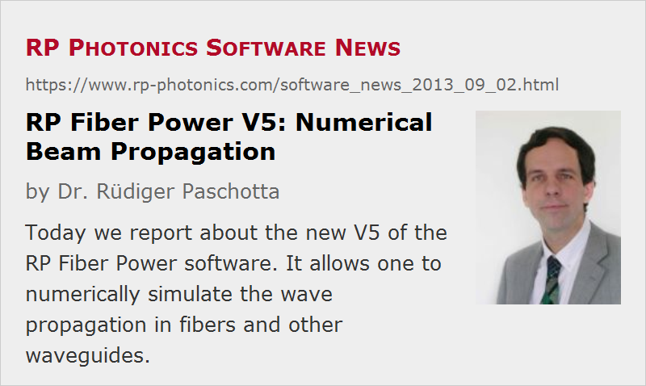

RP Fiber Power V5: Numerical Beam Propagation
Posted on 2013-09-02 in the RP Photonics Software News (available as e-mail newsletter!)
Permanent link: https://www.rp-photonics.com/software_news_2013_09_02.html
Author: Dr. Rüdiger Paschotta, RP Photonics Consulting GmbH
Abstract: Today we report about the new V5 of the RP Fiber Power software. It allows one to numerically simulate the wave propagation in fibers and other waveguides.
Ref.: description of the RP Fiber Power software

The latest version of the RP Fiber Power software – V5 – has an important new feature: it can numerically simulate beam propagation in fibers and other waveguides. Previous versions could only calculate the evolution of optical powers; for many applications, in particular concerning fiber lasers and fiber amplifiers, this was sufficient. The new feature allows one to study the details of wave propagation under the influence of various effects, such as saturable amplifier gain, parametric nonlinearities, variations of waveguide properties such as the core size, bend radius, etc. Arbitrary refractive index profiles can be defined, be it with a formula or with data read from an input file; the only limitation is that the index contrast should be low, which is the case for basically all glass fibers (except for those with air holes). This greatly expands the area of possible applications of this software. Various demo cases illustrate that:
- One can study bend effects e.g. in a large mode area fiber: in particular, mode-dependent losses as functions of the bend radius, and also the reduction in mode shape and area or mode mixing effects, whatever might be of interest. You can have arbitrarily varying bending along the fiber – for example, define a spiral-shaped, helical or any other path for the fiber core.
- One can simulate nonlinear self-focusing: check what exactly happens when the optical power gets into the megawatt region. One can not only see a reduction in mode size, and a catastrophic collapse above the self-focusing threshold power, but also certain oscillations.
- One can find out what exactly results e.g. from the misalignment of an input beam or at a non-perfect splice.
- For a double-clad fiber, one can check how the pump absorption is influenced by the shape of the pump cladding, by the position of the active core, bending, etc.
- Light propagation in a tapered fiber, where the core radius varies along the fiber, can be studied. One can see, e.g. how higher-order modes can be stripped off with a short taper region.
- Even the function of directional fiber couplers or of multi-core fibers can be investigated, as one can have arbitrary refractive index profiles – for example, with multiple cores, varying distances between those, etc. As an example, the figure below shows the field amplitude distribution in such a fiber coupler.
Originally, I wasn't aware how many new applications would become possible, as I was too much focused on active fiber devices, and there are now many new applications for passive devices. I am very pleased, however, to see how many more people can now profit from that software. And it is really fun playing with that tool – not least due to the nice user interface, in particular the interactive beam profile viewer. With that, you can easily view profiles in different planes, switch between different waves, get various parameters displayed (beam areas and radii, positions, powers, etc.), change color scales, look at complex phases or intensities only, etc. Below you see a screen shot. The shown profile resulted from a simulation of nonlinear self-focusing, where we started with an LP11 mode in the fiber. That mode became unstable due to the nonlinear interaction.
See also our demo video for numerical beam propagation.
As always, users of earlier versions of RP Fiber Power will soon obtain an offer to upgrade the software at a really moderate price.
This article is a posting of the RP Photonics Software News, authored by Dr. Rüdiger Paschotta. You may link to this page, because its location is permanent.
Note that you can also receive the articles in the form of a newsletter or with an RSS feed.
|  |
If you like this article, share it with your friends and colleagues, e.g. via social media:
These sharing buttons are implemented in a privacy-friendly way!